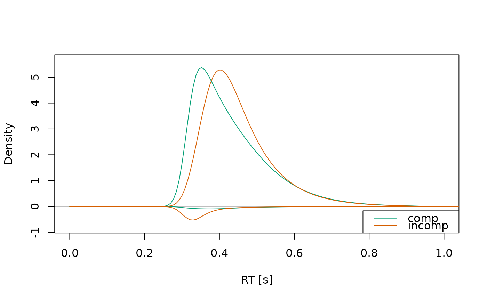
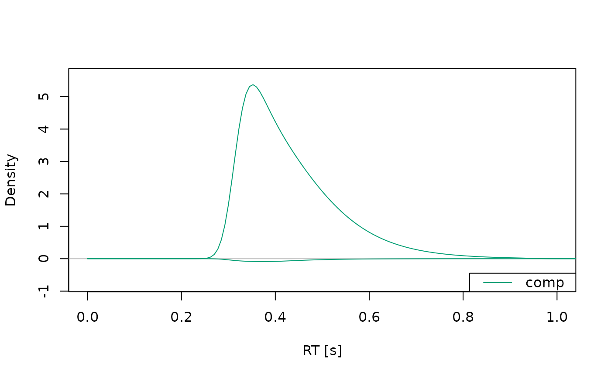
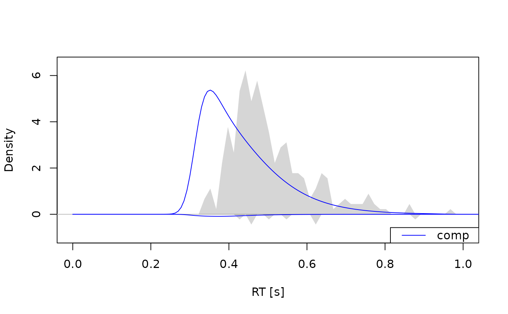
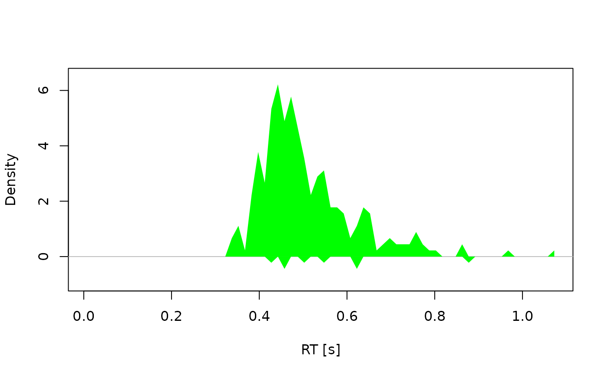
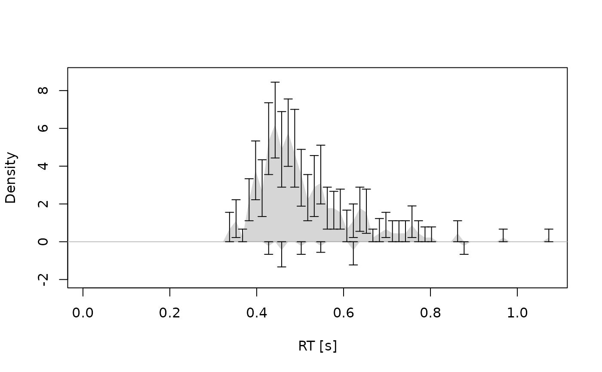

Visualizes observed and/or predicted response time distributions. Useful for assessing model fit or exploring model behavior.
Usage
# S3 method for class 'densities'
plot(
x,
...,
id = NULL,
conds = NULL,
col = NULL,
xlim = NULL,
ylim = NULL,
xlab = "RT [s]",
ylab = "Density",
obs_stats = "hist",
interval_obs = FALSE,
interval_pred = TRUE
)Arguments
- x
an object of
type = "densities", typically returned bycalc_stats().- ...
additional graphical arguments passed to plotting functions. See
set_default_arguments()for the full list of supported options.- id
a numeric or character, specifying the ID of a single participant to plot. If
length(id) > 1,plot.cafs()is called recursively for each entry. Eachidmust match an entry in theIDcolumn ofx.- conds
a character vector specifying the conditions to plot. Defaults to all available conditions.
- col
a character vector specifying colors for each condition. If a single color is provided, it is repeated for all conditions.
- xlim
a numeric vector of length 2, specifying the x-axis limits.
- ylim
a numeric vector of length 2, specifying the y-axis limits.
- xlab, ylab
character strings for the x- and y-axis labels.
- obs_stats
a character vector specifying which observed statistics to plot. Options include
"hist"for histograms and"kde"for kernel density estimates. Defaults to"hist".- interval_obs, interval_pred
logicals; if
TRUEandxcontains a column namedEstimate, error bars for observed data and shaded contours for predicted data are drawn, respectively.
Details
If x contains multiple IDs and no specific id is provided, the function
aggregates across participants before plotting. You can provide a vector of
ids to produce separate plots for each participant.
Observed densities are shown as histograms (default: gray shaded areas), or KDE lines (default: black, dotted). Predicted densities are shown as lines (default: colorized). Distributions associated with the upper boundary are shown with values > 0 (i.e., the upper part of the plot), distributions associated with the lower boundary are shown with values < 0 (i.e., the lower part of the plot).
Axis limits, colors, and styling options can be customized via .... If
interval information is provided (i.e., the column Estimate exists in x),
error bars or shading will be added, depending on the type of
statistic.
A legend is only displayed if there is predicted data.
Examples
# Example 1: Predicted densities only -------------------------------------
a_model <- dmc_dm()
dens <- calc_stats(a_model, type = "densities")
plot(dens, xlim = c(0, 1))

plot(dens, xlim = c(0, 1), conds = "comp")

# Example 2: Observed and predicted densities -----------------------------
obs_data(a_model) <- dmc_synth_data
dens <- calc_stats(a_model, type = "densities")
plot(dens, xlim = c(0, 1), conds = "comp", col = "blue")

# Example 3: Observed densities only --------------------------------------
dens <- calc_stats(dmc_synth_data, type = "densities")
plot(dens, conds = "comp", obs.hist.col = "green", alpha = 1)

# Example 4: With interval estimates --------------------------------------
dens <- calc_stats(dmc_synth_data, type = "densities", resample = TRUE)
plot(dens, interval_obs = TRUE, conds = "comp")
